Measuring the deployment of RFC9615 Authenticated DNSSSEC Bootstrapping
Q Misell
Max-Planck-Institut für Informatik
3rd of February 2025
What is the DNS?
example.com -> 2001:db8::1
DNS resolution, briefly
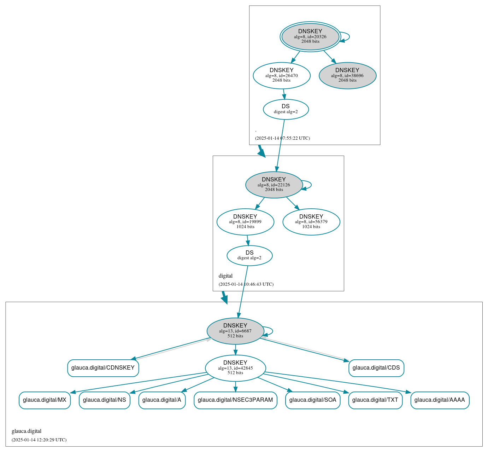
Specified in RFC1035 from November 1987. Things where different back then.
Security?
What security?
Most clients don't query the authoritative DNS servers directly.
How can they know their caching resolver of choice isn't lying?
How can a caching resolver know it isn't being lied to?
Domain Name System Security Extensions
The goals of DNSSEC
- Data integrity guarantees
- Data origin authentication
- Backwards compatibility and co-existence with "insecure DNS"
- Explicit none goal: data confidentiality
For a more detailed problem statement see RFC3833.
How does DNSSEC work?
;; QUESTION SECTION:
glauca.digital. IN AAAA
;; ANSWER SECTION:
glauca.digital. 21600 IN AAAA 2a0e:1cc1:1::1:1d
glauca.digital. 21600 IN RRSIG AAAA 13 2 86400 20250128121022 20250114121022 42845 glauca.digital. RZQ...tgg==Securing the chain
Delegation Signature (DS) records
;; QUESTION SECTION:
glauca.digital. IN DS
;; ANSWER SECTION:
glauca.digital. 3600 IN DS 6687 13 2 85D1C29F39F4F46012E036A269C2BA6C877F7F49177816202B03047B 558A7FB9
glauca.digital. 3600 IN RRSIG DS 8 2 3600 20250130153955 20250109143955 19899 digital. M7kk..7UU=- Root (.) signed with the global trust anchor
- Public key for digital. signed by the root
- Public key for glauca.digital. signed by digital.
- Address record for glauca.digital. signed by glauca.digital.
Case study: .ch
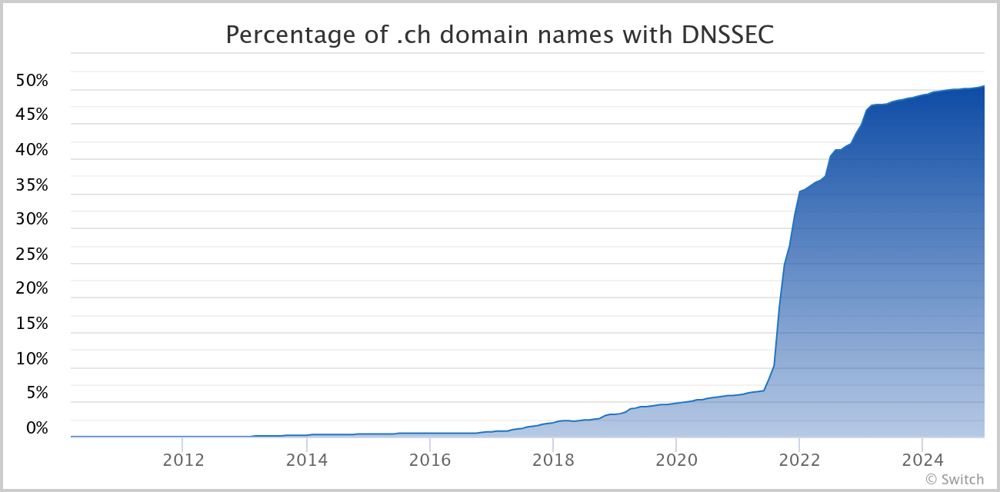
DNSSEC was first specified in 1999, why is nobody using it until 2021?
This is all very tedious to setup,
nobody bothers.

To the average user, this makes no sense
What happened in 2021?
1CHF per year discount for having a DNSSEC singed domain.

A carrot and stick approach works to get people to improve their security.
What if we didn't have to tie security upgrades to financial incentives?
RFC8078
Managing DS Records from the Parent via CDS/CDNSKEY
;; QUESTION SECTION:
glauca.digital. IN CDS
;; ANSWER SECTION:
glauca.digital. 21600 IN CDS 6687 13 2 85D1C29F39F4F46012E036A269C2BA6C877F7F49177816202B03047B 558A7FB9
glauca.digital. 21600 IN RRSIG CDS 13 2 86400 20250128122518 20250114122518 6687 glauca.digital. wEYu...Q==Where this works well: key-rollover
- There is already a DS between the parent and the child
- The child wants to update this DS record
- It publishes a new CDS record with the new key
- New CDS is signed by the old key
- Everything stays secure!
Where this leaves something to be desired: bootstrapping
- Someone lies to the parent with a CDS record
- Parent publishes a corresponding DS record
- Signature checks now fail
- DNS is broken; ohno!
RFC 9615
Automatic DNSSEC Bootstrapping Using
Authenticated Signals from the Zone's Operator
How does this work?
Consider the domain example.co.uk with nameservers ns1.example.net and ns2.example.org.
Publish a copy of CDS at the following two places:
_dsboot.example.co.uk._signal.ns1.example.net.
_dsboot.example.co.uk._signal.ns2.example.org.
_signal.ns1.example.net. must already be DNSSEC signed
Why does this work?
There is a cryptographically signed chain between the root and the _dsboot record.
We know what the nameservers for example.co.uk. are,
so we can verify that the CDS is what it should be.
There's a lot of crypto going on here.
A lot of room to make mistakes.
A new standard people aren't familiar with the pitfalls of yet.
It would be nice to know how people get it wrong, wouldn't it?
How do we find this out?
This is not so easy
.com alone is ~154 million domains.
With 2-10 name servers per domain and ~50 queries per domain per name server,
this works out to easily several billion queries.
YODNS
DNS-MSMT-INET / yodns
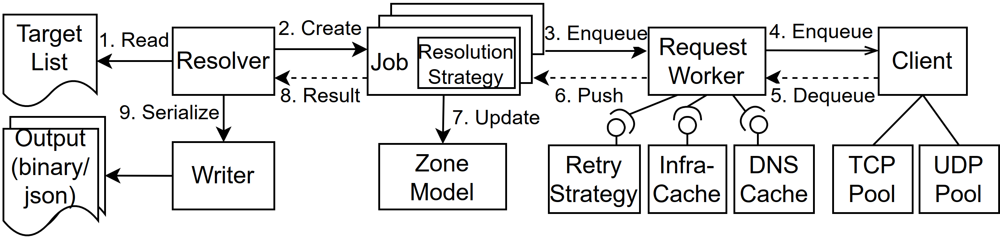
func DsBootModule() Module {
return Module{
OnFullNameResolved: func(job *resolver.ResolutionJob, name model.DomainName, zone *model.Zone) {
if !strings.HasPrefix(string(name), "_dsboot.") {
return
}
job.Enqueue(zone, model.Ask(name, client.TypeCDNSKEY))
job.Enqueue(zone, model.Ask(name, client.TypeCDS))
},
OnZoneCreated: func(job *resolver.ResolutionJob, zone *model.Zone) {
for _, ns := range zone.NameServers {
job.ResolveName(fmt.Sprintf("_dsboot.%v_signal.%v", zone.Name, ns.Name))
}
},
}
}(code somewhat simplified)
Initial results
Collected against the Tranco Top 1M
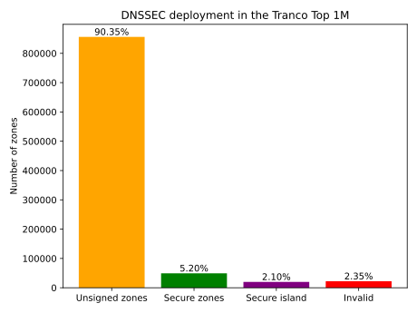
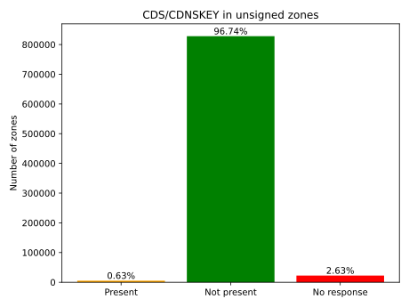
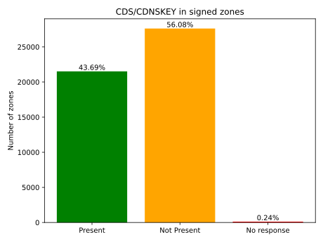
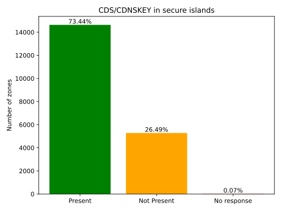
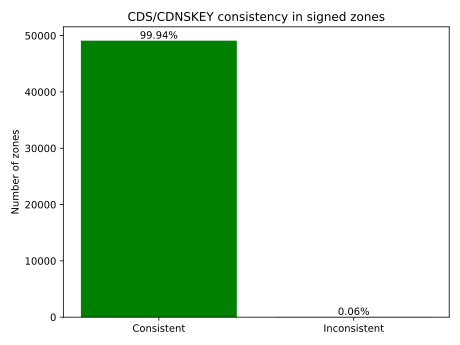
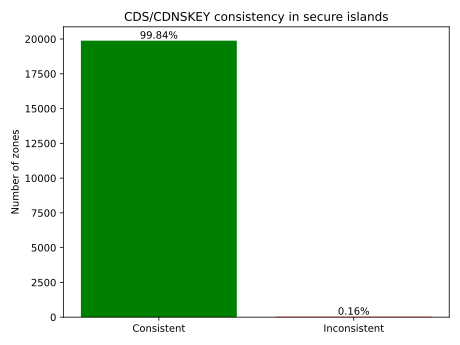
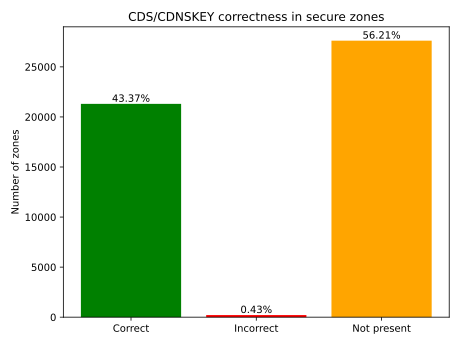
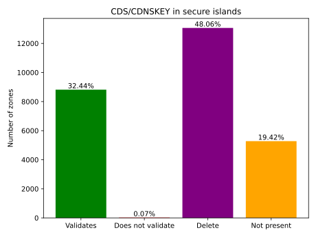
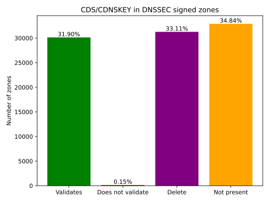
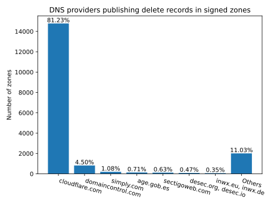
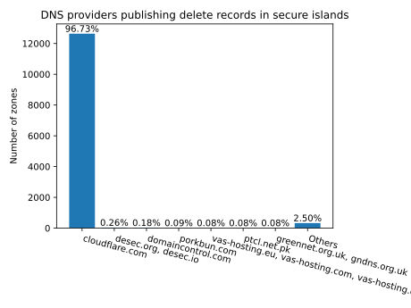
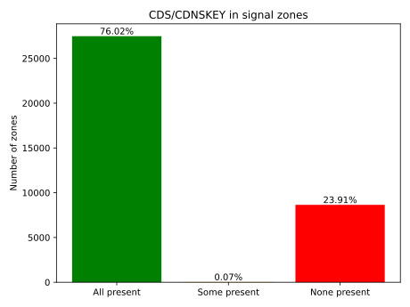
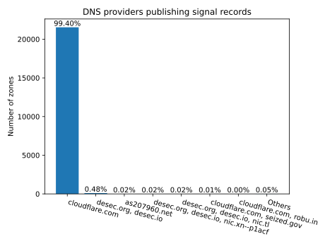
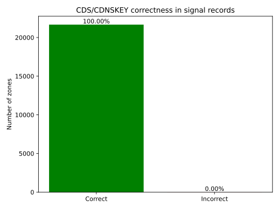
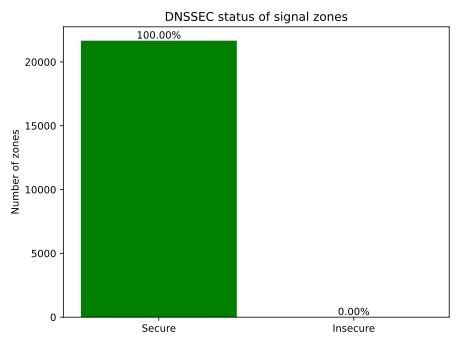
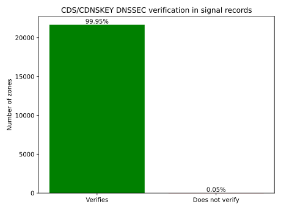
Key take-aways
- DNSSEC is not widely deployed
- Some DNSSEC servers still error when queried about CDS/CDNSSEC
- In signed zones CDS/CDNSKEY is somewhat broadly supported
- CDS/CDNSKEY is mostly used to disable DNSSEC
- Cloudflare dominates the DNSSEC space
- Signal zones are already well-supported
- Signal zones are, widely, implemented correctly
Next steps
Scan a larger segment of the DNS than 1M domains
Look into the reasons behind the mistakes we do see
Probably discover entirely novel classes of mistakes
Thank you! Questions?
Email: qmisell@mpi-inf.mpg.de
Slides at magicalcodewit.ch/imprs-slides/